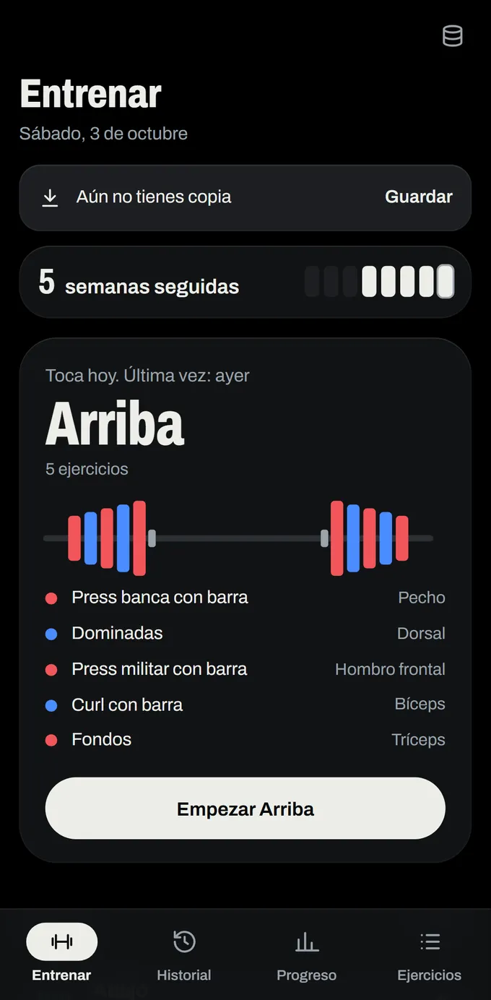
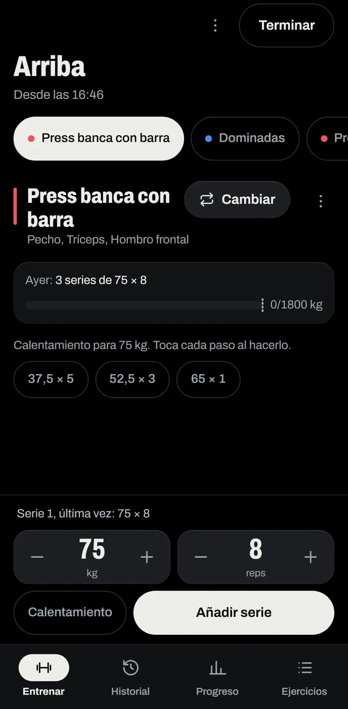
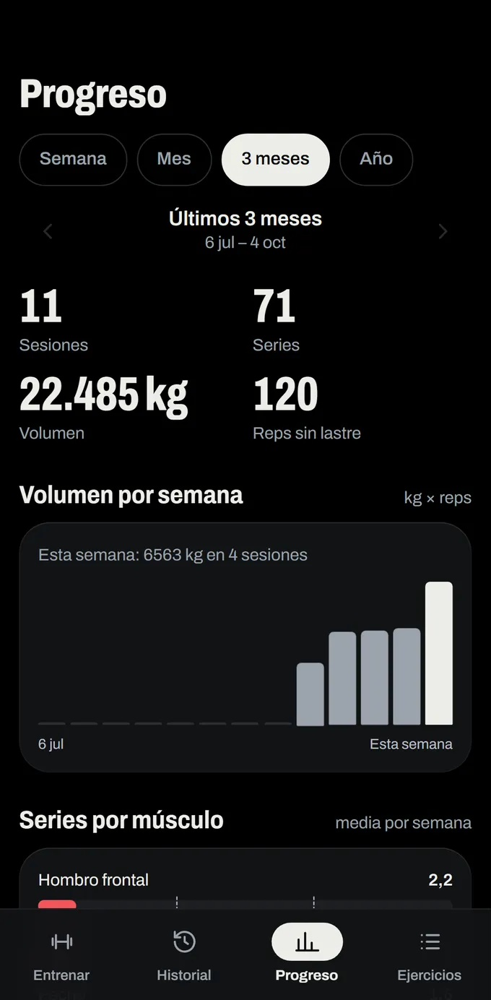
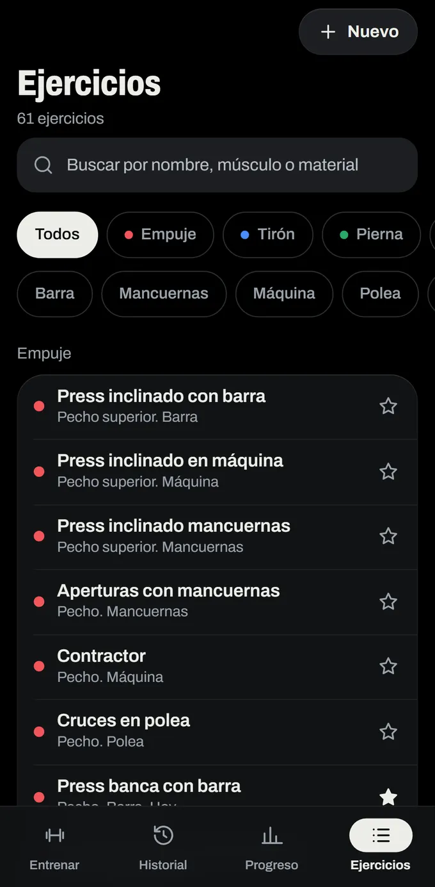

Cómo se entrena
-

EntrenarQué toca hoy, según tu rutina. -

SesiónCada serie, apuntada al momento. -

CalentamientoLos discos que vas a necesitar, antes de empezar. -

Progreso1RM estimado (Brzycki) y progreso por semana, mes, trimestre o año. -

Catálogo61 ejercicios base, con músculo y material. Y añade los tuyos.
- Sesión guiada
- Te recuerda cuánto pesaste la última vez y descansa por ti entre series.
- Rutinas reutilizables
- Con huecos para elegir la máquina que esté libre.
- Catálogo de ejercicios
- 61 base, con músculo y material. Y añade los tuyos.
- CSV y copias
- Exporta e importa CSV; guarda copias en Descargas cuando quieras.
- Idiomas y unidades
- En español e inglés. Kilos o libras.
- Calentamiento
- Con los discos que vas a necesitar.
Tus datos no salen del móvil
La app no tiene permiso de internet. No puede enviar tus datos a ningún sitio.
0 datos recogidos · 0 anuncios · 0 rastreadores · 0 servicios de terceros
- «Guardar copia» escribe un archivo en Descargas solo cuando tú lo pides.
- La copia de seguridad de Android, si la activas, se gestiona desde los ajustes del sistema.
- Desinstalar la app borra todos los datos.
Política de privacidad · texto íntegro
Última actualización: 3 de octubre de 2026.
SetRack no recoge, transmite ni comparte ningún dato personal. La app no tiene permiso de internet: la información que registras (ejercicios, series, pesos) se guarda únicamente en el almacenamiento local de tu dispositivo.
Tú controlas tus datos:
- «Guardar copia» escribe un archivo en la carpeta Descargas cuando tú lo pides.
- La copia de seguridad de Android (si está activa en el sistema) puede incluir los datos de la app; se gestiona desde los ajustes de tu dispositivo.
- Desinstalar la app borra todos los datos.
No hay analítica, anuncios, rastreadores ni servicios de terceros. La app tampoco solicita permisos de ubicación, cámara, contactos ni ningún otro además del almacenamiento local.
English summary: SetRack collects no data. It works fully offline, has no internet permission, no ads, no analytics and no third-party services. All data stays on your device; uninstalling removes everything.
Preguntas
¿Necesito crear una cuenta?
No. Abres la app y entrenas. No hay registro, ni correo, ni contraseñas.
¿Funciona sin conexión?
Sí. Es 100% offline: la app ni siquiera tiene permiso de internet. Sirve igual en un sótano sin cobertura.
¿Dónde están mis datos?
En tu móvil y solo en tu móvil. Sin nube, sin analítica y sin rastreadores. La copia la haces tú: exportación CSV o archivo en Descargas.
¿Puedo añadir mis propios ejercicios?
Sí. Los 61 ejercicios son la base: crea los tuyos con su músculo y su material.
¿Cuánto cuesta?
Nada. Gratis, sin anuncios y sin compras dentro de la app.
¿Cuándo estará en Google Play?
Está en fase de prueba interna. Cuando salga la versión pública, el enlace estará aquí.
Gratis. Sin anuncios. Sin cuenta.
Sesión guiada, rutinas, calentamiento, 1RM estimado y CSV. Tú levantas.
Está en prueba interna de Google Play. Si te resulta útil, puedes invitar un café.